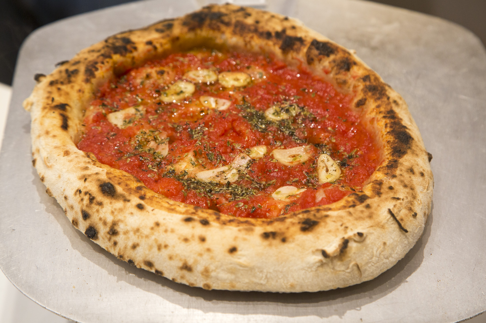
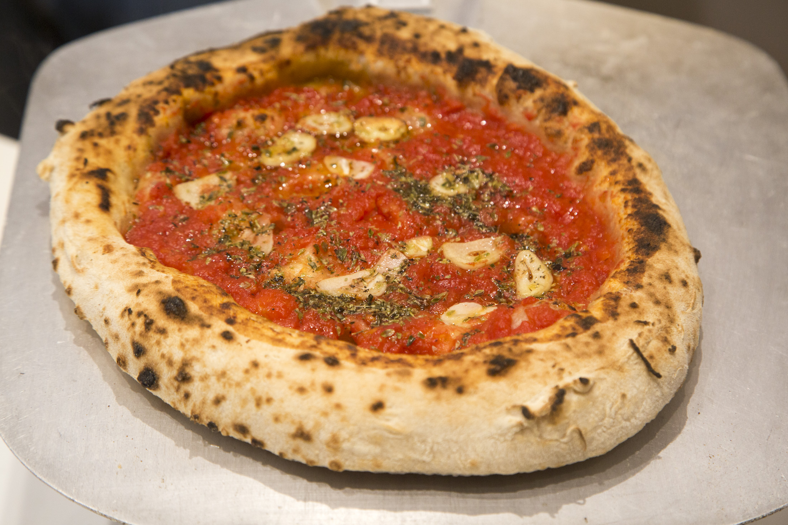

La Historia de Salvatore
Desde el corazón de Italia a las calles de Los Ángeles, Salvatore nació del sueño de un joven pizzero apasionado por la tradición napolitana. Usando ingredientes frescos, masa madre y horneadas en piedra, nuestras pizzas honran la receta original.
El fundador, Salvatore Rossi, trajo su herencia italiana y su amor por la buena comida para crear un rincón donde la pizza es arte.
Nuestras Pizzas
 


Eventos y Catering
¡Lleva la experiencia Salvatore a tus celebraciones! Ofrecemos servicio para cumpleaños, eventos corporativos, ferias y más. Nuestro horno portátil de piedra permite que preparemos pizzas frescas al instante, donde sea que estés.
Contacto
📍 Los Ángeles, Chile
📞 +56 9 1234 5678
✉️ contacto@salvatorepizza.cl
Síguenos en redes sociales: